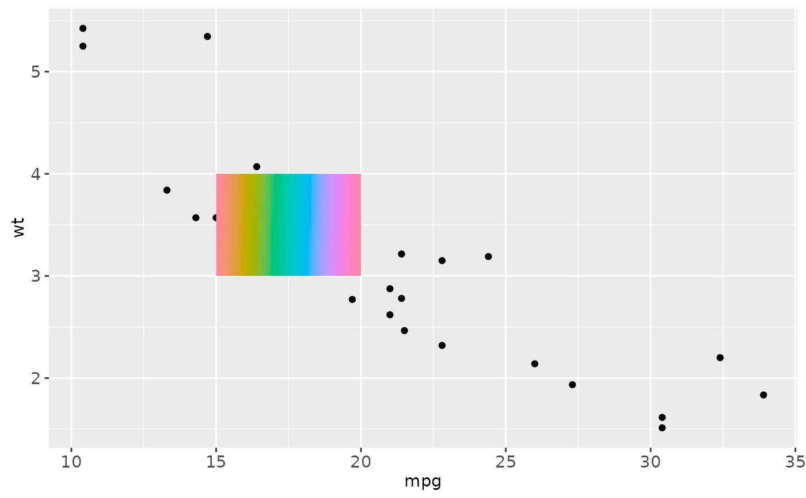
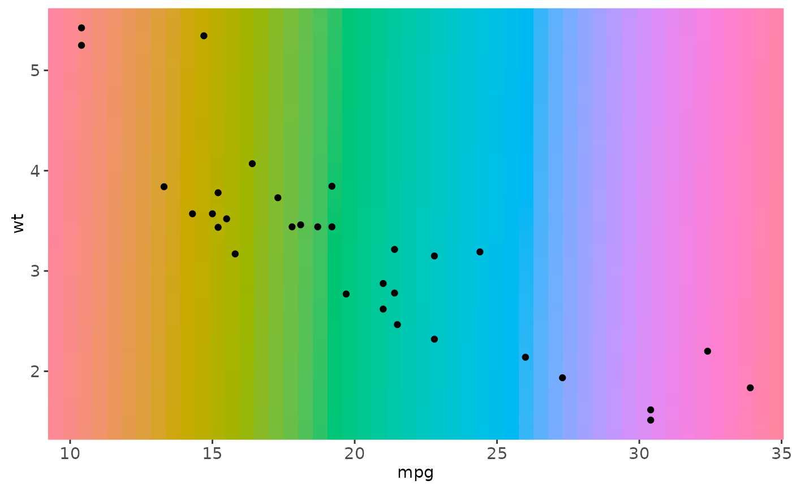
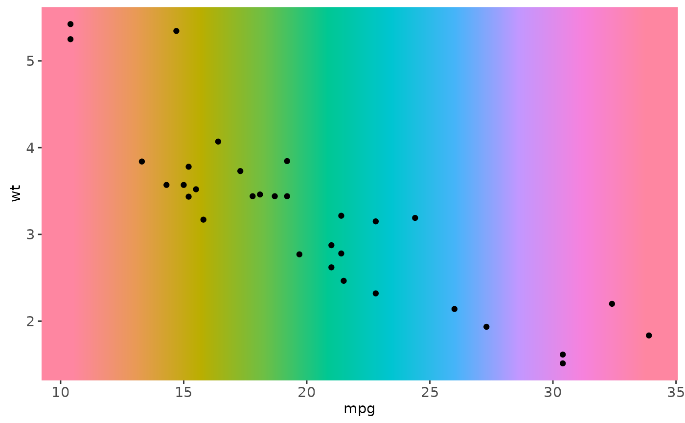

This is a special version of geom_raster optimised for static
annotations that are the same in every panel. These annotations will not
affect scales (i.e. the x and y axes will not grow to cover the range
of the raster, and the raster must already have its own colours).
Examples
# Generate data
rainbow <- matrix(hcl(seq(0, 360, length.out = 50 * 50), 80, 70), nrow = 50)
ggplot(mtcars, aes(mpg, wt)) +
geom_point() +
annotation_raster(rainbow, 15, 20, 3, 4)

# To fill up whole plot
ggplot(mtcars, aes(mpg, wt)) +
annotation_raster(rainbow, -Inf, Inf, -Inf, Inf) +
geom_point()

rainbow2 <- matrix(hcl(seq(0, 360, length.out = 10), 80, 70), nrow = 1)
ggplot(mtcars, aes(mpg, wt)) +
annotation_raster(rainbow2, -Inf, Inf, -Inf, Inf) +
geom_point()
rainbow2 <- matrix(hcl(seq(0, 360, length.out = 10), 80, 70), nrow = 1)
ggplot(mtcars, aes(mpg, wt)) +
annotation_raster(rainbow2, -Inf, Inf, -Inf, Inf, interpolate = TRUE) +
geom_point()
